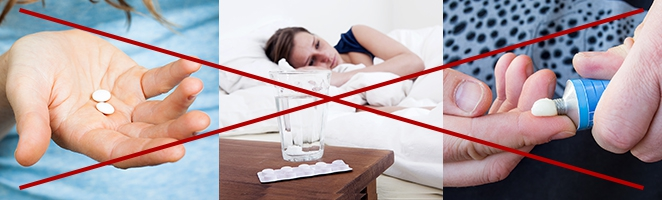

Temperatura
máxima
Con su invento cualquiera puede eliminar el dolor de cabeza en 10 minutos. ¡Y de una manera tan sencilla que miles de personas dejan de tomar los analgésicos!
Su profesora se rio de él. Hoy su invento le permite a cualquiera eliminar el dolor de cabeza en 10 minutos. ¡Y de una manera tan sencilla que miles de personas dejan de tomar los analgésicos!
Si hubiera sido un "alumno obediente" y hubiera escuchado a su profesora, el mundo nunca habría oído hablar de su descubrimiento pionero. David Nogales de 20 años de Valencia patentó un objeto sencillo que alivia cualquier tipo de dolor de cabeza en 10 minutos, y después de 21 días lo elimina para siempre. El invento del joven genio sirve para eliminar cualquier tipo de dolor, independientemente de su gravedad. Hasta ahora más de 23 personas lo han utilizado. Cada una de ellas eliminó su problema por completo: ya sea una sinusitis u otras dolencias como la neuralgia o una migraña severa. ¿Cómo tuvo lugar este fenomenal descubrimiento?
Esta historia nos muestra cómo la educación contemporánea destruye el talento de verdad. Cuando David Nogales todavía era estudiante del instituto quería representar la escuela en un concurso nacional para jóvenes científicos. Buscando el apoyo, le mostró a su maestra el diseño de un antifaz que alivia dolor de cabeza y los senos nasales en solo 10 minutos. Sin embargo, ella se rio con sorna y dijo: "Esta frikada no sirve para nada. ¡No seas ingenuo!". La profesora no se quedó corta al burlarse de él y humillarle delante de toda la clase.
Por suerte, el chaval decidió tomar cartas en el asunto. Tiró de sus ahorros para financiar su participación en el concurso y su viaje a Madrid, donde los jóvenes inventores iban a presentar sus trabajos. Allí lo vio un inversor quien le ayudó a perfeccionar su idea. Hoy en día, la patente del antifaz analgésico está valorada en... ¡5 billones de dólares! Sin embargo, al joven inventor lo que le importaba es que su solución estuviera disponible para todas las personas que quisieran utilizarla, no solo para los ricos. Gracias a los esfuerzos de David Nogales, el antifaz analgésico se puede obtener de manera muy sencilla y, además, por poco dinero.
"Quería ayudarle a mi abuela"
El director de la escuela donde David Nogales estudió se negaba a comentar el caso hasta hace muy poco. Sin embargo, conseguimos contactar con uno de los profesores que trabajan allí. Nos pidió que no reveláramos su nombre real en nuestra página. El hombre nos contó que la profesora que había menospreciado el proyecto de su talentoso alumno tenía que haber sido despedida después de que el caso saliera a la luz. Sin embargo, no le despidieron, ¡a petición del mismo David Nogales, la víctima!
El joven genio encontró un momento para hablar con nosotros por teléfono. Cuando le preguntamos por qué salió en defensa de la mujer que se había reído de su invento pionero y le había humillado delante de sus compañeros, respondió con modestia:
"La gente comete errores. Siempre hay que darles una segunda oportunidad. Eso me lo enseñó mi abuela, la persona para la que diseñé el antifaz analgésico. Realmente quería ayudarla a combatir sus fuertes migraña que la atormentaban desde hacía años, y creía que con mi invento lo lograría. No había nada que me pudiera impedir acudir a ese concurso. Me alegro de haber conocido allí a alguien que creyó en mi idea. Gracias a ello, pude ayudar no solo a mi abuela, sino también a miles de personas que ya no tenían esperanza de aliviar su dolor de cabeza persistente.
Hoy en día, las empresas más grandes del mundo pelean entre ellas, ya que quieren financiar los trabajos de David Nogales en sus próximos proyectos. Sin embargo, él mismo dice que le gustaría estudiar biología primero, y después dedicarse a desarrollar la carrera. ¡Cuesta imaginar con qué nos puede sorprender este excepcional joven en un par de años!
¡Ahora, cualquiera con dolores de cabeza y problemas de sinusitis puede utilizar el antifaz analgésico y recuperar un estado de ánimo perfecto en solo 10 minutos!
Desde hace una semana, el antifaz analgésico diseñado por un joven genio también está disponible en nuestro país. Sin embargo, el interés es tan grande que el primer lote ya se ha agotado. También comenzaron a aparecer las falsificaciones del invento de David Nogales en el mercado, y en grandes cantidades. ¿Por qué hay tanto interés en este producto?
El profesor Esteban Quebec, especialista en neurología, accedió a responder nuestra pregunta.
"Las personas que sufren de dolor de cabeza a diario solo han tenido una opción hasta ahora: tomar analgésicos. Por supuesto, los analgésicos nos hacen sentir mejor, pero por desgracia tienen muchos efectos secundarios, como daños en el hígado, úlceras estomacales o problemas intestinales y renales. Con el tiempo, notamos que las pastillas que antes solían aliviar nuestro dolor con eficacia, ya no tienen un efecto tan fuerte en nuestro cuerpo. Esto ocurre porque nuestro cuerpo empieza a volverse inmune a ellas. Como resultado, aumentamos la dosis de medicamentos dañinos y dañamos cada vez más nuestro cuerpo. Es como si quisieras adelgazar pero en vez de entrenar te compraras pantalones de una talla mayor. Puede que te sirva durante un tiempo, pero después necesitarás pantalones aún más grandes. Así que gastas más y más dinero, pero no te ayudas a ti mismo en absoluto. Y al mismo tiempo, ¡la escala de tu enfermedad aumenta! Por desgracia, la mayoría de las personas no se dan cuenta de esto en su día a día. Se percatan de que su problema necesita una intervención cuando ya es demasiado tarde.

Las pomadas y los geles analgésicos tampoco son una buena idea. Al comprarlos solo estás tirando el dinero por la ventana. Se aplican desde el exterior, por lo que es difícil que lleguen a través de la piel a la fuente del problema. Para el colmo, también pueden causar fuertes reacciones alérgicas, inflamación, irritación e incluso quemaduras en la piel. Entonces no es de extrañar que la gente que sufre de dolor de cabeza tome pastillas químicas con más frecuencia. Convencidos de su efecto saludable, causamos todavía más estragos en el cuerpo.
Mientras tanto, el antifaz patentado por David Nogales no tiene ninguno de los inconvenientes que acabo de mencionar... Es más, funciona mucho mejor que las pastillas, los geles y los ungüentos. Todo porque resuelve de una vez por todas el problema de cualquier tipo de dolor de cabeza: desde el dolor provocado por una vista cansada, las sienes, hasta la inflamación de los senos nasales o la migraña. Basta con ponerlo en los ojos y relajarse para que el dolor desaparezca sin rastro en 10 minutos. ¿Cómo es posible? El antifaz está hecho de algodón de alta calidad, certificado por OECO-TEX, retiene perfectamente el calor y actúa como una bolsa de agua. El antifaz contiene semillas de mostaza blanca, una planta conocida por sus propiedades curativas, utilizada para tratar dolencias como la migraña y los dolores de los senos nasales. Cuando se exponen a la temperatura adecuada, producen una radiación natural y beneficiosa que tiene un efecto positivo en el cuerpo humano. Este método natural y no invasivo hace que el dolor desaparezca de una vez por todas después de 21 días de uso. Es un gran logro que creo que sacudirá a la industria farmacéutica, y lo hará muy pronto”.
Sin embargo, el profesor Quebec advierte que la gente que quiere usar el antifaz analgésico no debe comprar las falsificaciones que abundan en Internet. Estas no se fabrican de acuerdo con las directrices establecidas en la patente. Tampoco están hechas de materiales adecuados. "Pueden parecer muy similares al original, pero es lo único que tienen en común. Lamentablemente, ya se han notificado casos de personas que utilizaron esas falsificaciones. No funcionaron en absoluto. No merece la pena desgastar los nervios y el dinero", comenta el profesor.
Es la razón por la que les proporcionamos a nuestros lectores un enlace comprobado donde se puede conseguir el antifaz analgésico original diseñado por David Nogales. Cabe resaltar que en esta página puedes aprovechar una financiación del 50%, que el joven inventor negoció especialmente para los usuarios de su país.
Haz clic aquí para obtener el antifaz analgésico original con una subvención, y eliminar el dolor de cabeza en 10 minutos >>
Haz clic aquí para obtener el antifaz analgésico original con una subvención, y eliminar el dolor de cabeza en 10 minutos >>
La oferta especial está vigente hasta el final del día 20.11.2020
Artículos similares:


Comentarios
Evita
miércoles 18.11.2020
¿Alguno de vosotros ha usado este antifaz antes? Si es así, ¿las recomendáis?
Sara
miércoles 18.11.2020
Me uno a la pregunta, nada más leer el artículo pensé que le vendría bien a mi abuela
Mariano
miércoles 18.11.2020
Yo las llevo usando 2 semanas y estoy impresionado. Apenas me levantaba de la cama antes, y salir era una cosa que me superaba. Ahora he vuelto a rebozar de energía y no me duele nada. Me siento mejor cada día. Así que a estas alturas las recomiendo encarecidamente, merecen la pena.
Elena
miércoles 18.11.2020
Desde que tengo memoria, me he quejado de dolores de cabeza. Fue algo que más me molestaba durante mis estudios de medicina, porque como sabes: tienes que empollar, tienes que leer mucho, casi siempre por las noches... Es imposible estudiar para los exámenes, cuando sientes que alguien te está clavando algo en las sienes. Terrible. Estuve tomando analgésicos fuertes prácticamente durante todos mis estudios. Me parecía que iba a dañar mi hígado por completo todavía antes de graduarme. Pero por suerte, encontré esta página con este antifaz analgésico. Cuando mi compañera de piso (también estudiante de medicina) me vio tirado en casa con el antifaz puesto, se rió de mí y se golpeó la cabeza al verme creer en esos remedios milagrosos. Pero cuando empecé a rebozar de energía y tener aspecto descansado, me preguntó dónde podía conseguir el antifaz para ella misma :P Mis migrañas han desaparecido por completo, y ya he recomendado esta maravilla a todas las personas del curso que tenían problemas similares :)
Imanol
miércoles 18.11.2020
Aunque no sufría del dolor de cabeza a menudo, cuando este aparecía, no tenía ganas y no tenía fuerzas para hacer nada... Mi esposa finalmente me dijo que si hubiera vuelto a oír que el dolor no era nada, me habría mandado a fuerza a un médico, porque no puede verme tirado así todo el día. Pero gracias a este antifaz he acabado con el dolor de una vez por todas y, por fin, puedo ayudarle con las tareas domésticas. Un gran alivio para mí, y mi esposa está más tranquila
Lucía
miércoles 18.11.2020
¡También usé este antifaz y no sólo desapareció el dolor, sino también las arrugas! Me siento inmediatamente 10 años más joven, porque ahora me siento descansada, antes por este cansancio parecía ser una yaya... Ahora me miro al espejo con mucho gusto :)
María
Enseguida se ve que es un chaval listo y educado. ¡Siempre he dicho que tenemos una juventud capaz!